実測データからCAEの"見えない値"を求める
データ同化入門 ― ミッフィーちゃんで試した数値実験
モチベーション: 工作機械の熱変位予測 ／ 試した手法: OI・KF・EnKF・ESMDA
きっかけ
工作機械の熱変位は加工精度に直結するが、実測できる温度・角度はごく一部。全体の温度分布・変位は見えない。
着目した技術
データ同化：シミュレーションと一部の実測を統計的に融合し、未観測の場を最良推定する枠組み。
今回やったこと
ミッフィーちゃんの2Dドット絵を「真の温度場」に見立て、疎な固定センサだけから復元できるか数値実験で確認した。

固定センサの温度観測だけから、ミッフィーちゃんの温度場・熱源場が徐々に浮かび上がる（ESMDA 完全逆問題版）
発表の流れ
＋先行研究（KF×デジタルツイン）
前提と誤差共分散の整理
1.1 工作機械の加工精度と熱変位
問題意識
この一連の流れを精度よく予測できれば、加工誤差の補正やリアルタイム熱変位補正が可能になる。 しかし実機で得られる情報は、限られた点の温度センサと、限られた角度・変位センサだけ。 知りたい「全体の温度分布」「全体の変位分布」は直接には見えない。
※ 熱変位は加工誤差の最大75%を占めるとの報告もある（Mayr et al., Lang et al. 2024 より）。
1.2 「傾向が合えばよい」が通用しない理由
熱解析だけなら
条件が多少ズレても、温度分布の傾向（どこが高温か・熱がどう伝わるか）さえ合っていれば実用上は十分なことが多い。
熱構造解析（熱変位）になると
温度分布の傾向が同じでも、熱変位の傾向は条件によって変わりやすい。 固定点でのばね合成（拘束条件・剛性の非対称性）などが変位の向き・大きさに強く効くため。
着目した技術
一部の実測温度・角度情報から、シミュレーションと矛盾しない形で温度分布・変位を推定する技術＝データ同化。 将来的には「温度＋角度情報 → 温度分布＋変位」の同時推定を目指す。
1.3 先行研究：カルマンフィルタ×熱デジタルツイン（ETH Zurich）
Lang et al., "Kalman Filter-Driven State Observer for Thermal Error Compensation in Machine Tool Digital Twins", Manufacturing Letters 41 (2024) 208–218（NAMRC 52, オープンアクセス CC BY-NC-ND）
何を解決したかった研究か（背景）
熱変位補正の既存手段には、それぞれ実用上の壁がある： ①恒温化・強制冷却はエネルギーコストが大きい。 ②データ駆動の補正モデル（機械学習系）は高品質な学習データの取得に数週間の計測と数百〜数千kWhを要し、 さらに学習に含まれない運転条件では精度が保証されない（ロバスト性の欠如）。
この研究の意義（狙い）
学習データを一切使わず、物理モデル（FE）＋カルマンフィルタだけで熱状態全体を観測し、 熱変位をリアルタイムに補正できることを実証すること。 物理ベースなので未経験の運転条件にも原理的に対応でき、 学習データ取得のコストと期間をまるごと省ける。
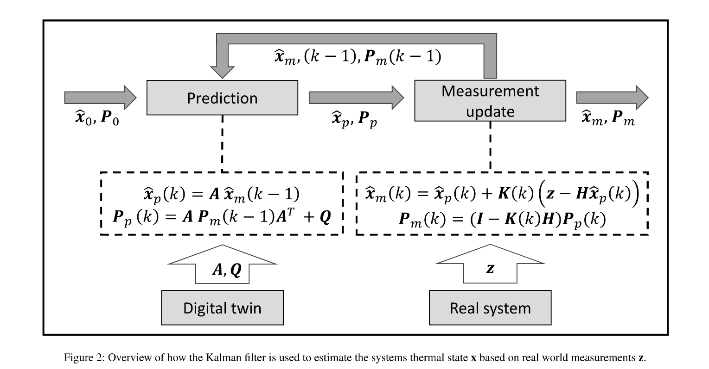
縮約FEモデル（デジタルツイン）が予測を、実機センサ（Real system）が観測 z を供給し、KFが熱状態 x 全体を推定する ― Lang et al. 2024, Fig.2
アイデア
ANSYSのFEモデルをモード縮約（35万節点→214モード）し、 カルマンフィルタで少数センサから熱状態全体を逐次推定。 推定した温度場で力学モデルを解き、熱変位をリアルタイムに計算・補正する。
ポイント
- 学習データ不要（純粋に物理モデルベース）
- 熱入力 u は「実機では測れない」として未知扱い → KFの補正に任せる
- まさに「一部の実測から全体を推定する」データ同化そのもの
1.4 先行研究の結果：13点のセンサで35万要素の熱状態を再現
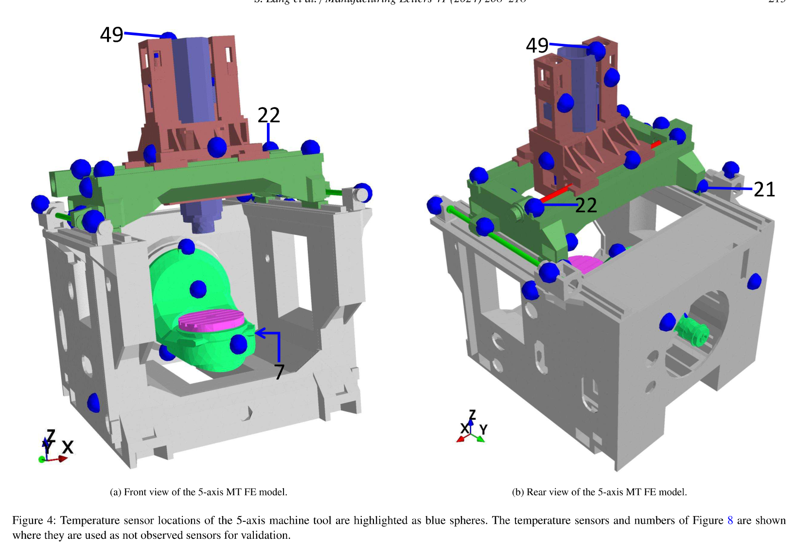
5軸マシニングセンタ（Mori Seiki NMV5000 DCG）のFEモデルとセンサ位置（青球）― Lang et al. 2024, Fig.4
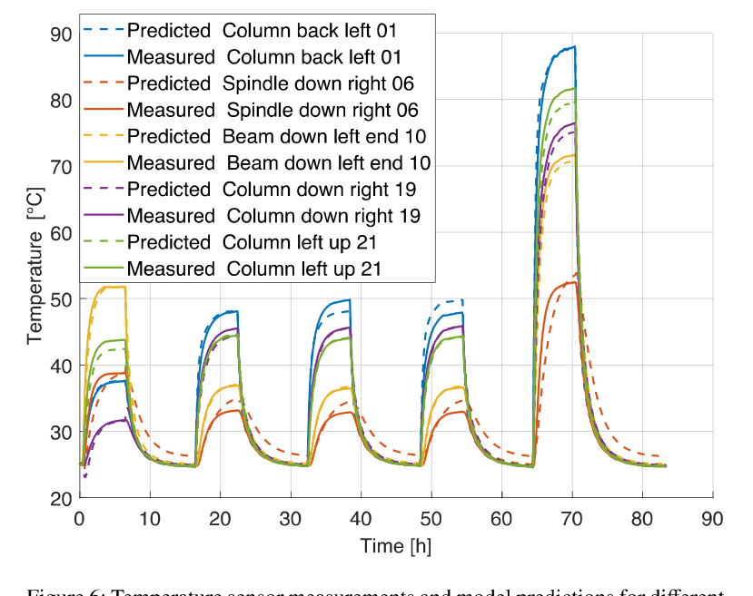
KFに入れていない「未観測センサ」位置の温度（実線=実測、破線=推定）がよく一致 ― Lang et al. 2024, Fig.6
1.5 先行研究の結果：熱変位の予測
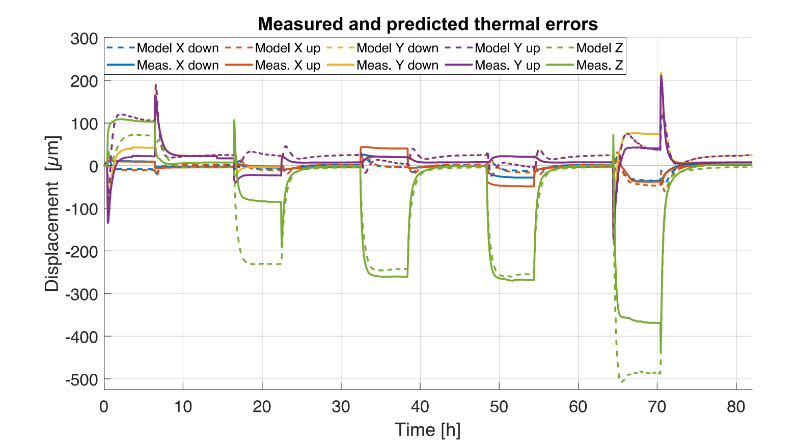
5つの変位プローブでの熱変位。実線=実測、破線=KF推定温度場からの予測 ― Lang et al. 2024, Fig.7
熱変位はどう計算しているか
熱構造FEMを毎回解き直すのではなく、KFが推定した温度場 $\mathbf{x}(t)$ から行列積一発で計算する（論文 式(2)）：
- $\mathbf{x}(t)$：KFが推定した温度場（熱状態）
- $\mathbf{K}_{th}$：熱→力学の結合行列。熱膨張係数 $\alpha$ に基づき、温度を等価な体積力（熱荷重）に変換
- $\mathbf{K}^{-1}$：機械剛性行列の逆。荷重→変形の変換（材質・メッシュで決まる）
- $\mathbf{C}_i$：着目点の変位だけを取り出す行列（工具先端 TCP とワーク側 WCP の相対変位）
行列はすべて事前に構築（＋モード縮約）できるので、温度場さえ推定できれば熱変位はリアルタイムに出せる。
1.6 補足：$\mathbf{y}_{\rm mech} = \mathbf{C}_i\,\mathbf{K}^{-1}\mathbf{K}_{th}\,\mathbf{x}$ の導出と計算手順
導出（熱応力FEMの基本式から4行）
① 温度が $\Delta T$ 上がった材料は等方に伸びようとする（熱ひずみ）： $\boldsymbol{\varepsilon}_{th} = \alpha\, \Delta T$（$\alpha$：熱膨張係数）
② FEMではこの「伸びようとする作用」を等価節点力に変換する： $\mathbf{f}_{th} = \displaystyle\int \mathbf{B}^\top \mathbf{D}\, \boldsymbol{\varepsilon}_{th}\, dV$。 $\boldsymbol{\varepsilon}_{th}$ は節点温度に線形なので、まとめて $\mathbf{f}_{th} = \mathbf{K}_{th}\,\mathbf{x}$ と行列で書ける
③ 熱荷重だけが作用する静的つり合い： $\mathbf{K}\,\mathbf{u} = \mathbf{f}_{th} = \mathbf{K}_{th}\,\mathbf{x}$ → 解いて $\mathbf{u} = \mathbf{K}^{-1}\mathbf{K}_{th}\,\mathbf{x}$
④ 欲しいのは全節点変位 $\mathbf{u}$ ではなく着目点（TCP–WCP間の相対変位）だけ。 抜き出し行列 $\mathbf{C}_i$ を掛けて： $\mathbf{y}_{\rm mech} = \mathbf{C}_i\,\mathbf{u} = \mathbf{C}_i\,\mathbf{K}^{-1}\mathbf{K}_{th}\,\mathbf{x}$ ∎
$\mathbf{B}$：ひずみ-変位マトリクス、$\mathbf{D}$：応力-ひずみ（弾性）マトリクス、$\mathbf{K}$：剛性行列
具体的な計算手順（なぜリアルタイムで出せるか）
オフライン（事前に1回だけ）
メッシュ・物性から $\mathbf{K}$, $\mathbf{K}_{th}$, $\mathbf{C}_i$ を構築し、 $\mathbf{G} \equiv \mathbf{C}_i\mathbf{K}^{-1}\mathbf{K}_{th}$ をまとめて計算しておく。 逆行列を陽に作る必要はなく、$\mathbf{K}\mathbf{G}' = \mathbf{K}_{th}$ の連立一次方程式を解けばよい。 モード縮約後なら行列サイズは214×214程度で軽い。
オンライン（毎時刻）
KFが推定した温度場 $\mathbf{x}(t)$ に対し $\mathbf{y}_{\rm mech} = \mathbf{G}\,\mathbf{x}(t)$ の行列ベクトル積1回だけ。 熱構造FEMを解き直す必要がない → リアルタイム熱変位補正が成立する。
1.7 行列で具体的に書くと（サイズと中身）
節点数 $n$（温度自由度 $n$、変位自由度 $3n$）、着目量2つ（例：X方向とZ方向の相対変位）の場合：
④ $\mathbf{C}_i$ の中身 ― 「引き算するだけの行列」
全節点変位 $\mathbf{u} = (u_{1x}, u_{1y}, u_{1z}, u_{2x}, \ldots)^\top \in \mathbb{R}^{3n}$ のうち、 欲しいのは工具先端（TCP、節点番号 $p$ とする）とワーク側（WCP、節点番号 $q$）の相対変位だけ。 たとえば Z 方向なら：
つまり $\mathbf{C}_i$ は、該当する自由度の列に $+1$ と $-1$ が立つだけの疎な抜き出し行列。 「行列」といっても実体は「$p$ 番の変位から $q$ 番の変位を引く」という操作を式の形にしただけ。
まとめて1つの行列 $\mathbf{G}$ にする
成分で書くと：
$G_{kj}$ ＝「節点 $j$ の温度が 1°C 上がったとき、着目変位 $k$ が何 μm 動くか」という感度（影響係数）。 つまり熱変位は「各節点温度 × その節点の影響係数」の総和にすぎない。 $\mathbf{G}$ は 2×$n$ の小さな行列なので、温度場さえ分かれば掛け算一発で変位が出る。
2.1 データ同化とは？ ― シミュレーションと実測、それぞれの弱点
シミュレーション（予測値）
境界条件・物性値・初期値には必ず誤差がある。全格子点の値は計算できるが、現実とズレていく。
実測（観測値）
現実の値そのものだが、センサを置ける場所は一部だけで、ノイズも乗る。
参考記事: 「データ同化入門」 https://takun-physics.net/19375/
2.2 なぜ1点の観測から全体を直せるのか
状態ベクトル $\mathbf{x}$ は各格子点の物理量（例：各点の温度 $T_1, T_2, \ldots$）。 予報誤差共分散行列 $\mathbf{P}^f$ は「どこがどれだけ間違いやすいか」「どの点とどの点の間違い方が連動するか」を表す間違い方の地図。
この地図（空間相関）があるおかげで、1点の温度観測だけでも、相関の強い周辺の点まで一緒に補正できる。これがカルマンゲイン $\mathbf{K}$ の役割。
カルマンゲインによる更新
$$\mathbf{x}^a = \mathbf{x}^f + \mathbf{K}(\mathbf{y} - H\mathbf{x}^f)$$
$$\mathbf{K} = \mathbf{P}^f H^\top (H\mathbf{P}^f H^\top + \mathbf{R})^{-1}$$
観測残差（実測 − 予測）を、共分散の形に応じて空間全体に配分する。
3. 検証題材：なぜミッフィーちゃんか
いきなり工作機械の実問題で試すのは難しいため、まず2Dドット絵を「真の温度場」に見立てた簡単な題材で、 データ同化の基礎（B行列・カルマンゲイン・アンサンブル・局所化）を体で確認することにした。
- 複雑な輪郭を持つ画像 → 少数の固定観測点でどこまで復元できるか、目で見て評価できる
- 真値が既知（ツイン実験）なので RMSE で定量評価できる
- グリッド 30×30〜60×60、状態変数は数百〜数千次元 → 実機の熱・変位場と同程度のオーダー感
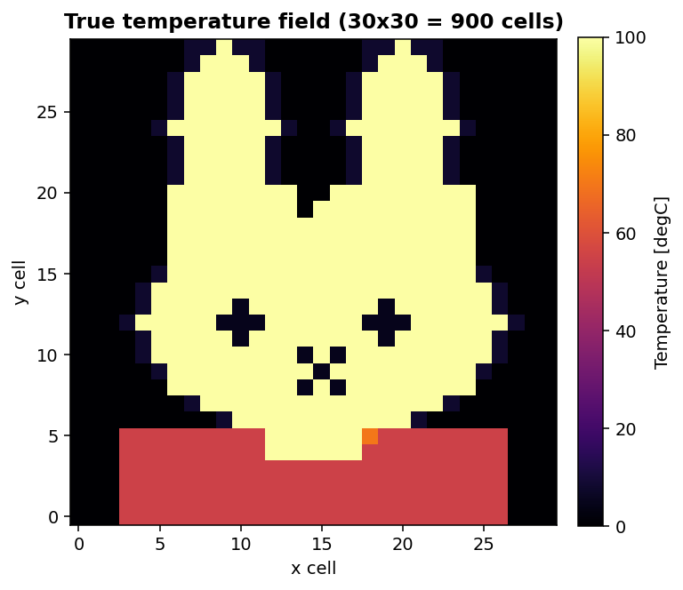
真の温度場（現行ケースの30×30=900セル版）
4.1 試した手法の全体マップ
| 手法 | B（誤差共分散）の扱い | センサ | 結果 | |
|---|---|---|---|---|
| ① | OI（最適内挿法） | 解析的ガウス型で固定 | ランダム／毎回 | ○ シンプル・安定 |
| ② | KF（カルマンフィルタ） | P行列を厳密に時間発展 | ランダム／毎回 | ○ 線形厳密だが大規模には不向き |
| ③ | EnKF（アンサンブルKF） | アンサンブルから推定 | ランダム／毎回 | ○ データドリブンでOIより高精度 |
| ④ | EnKF + 固定センサ + インフレーション | アンサンブルから推定 | 固定 | × 発散 インフレーション暴走 |
| ⑤ | ESMDA（本命） | アンサンブル＋反復で緩やかに更新 | 固定 | ◎ 安定・高精度 |
結果パート（5章）では、この表の ①→②→③→④→⑤ の順に1つずつ結果を見ていく。
4.2 前提の整理：どこまで「線形ガウス」を仮定しているか
今回試した手法の更新式はすべて同じカルマンゲイン型（＝線形ガウスのベイズ更新）。手法ごとに「何を線形・ガウスと仮定しているか」を整理する。
| 手法 | システムモデル（時間発展） | 観測モデル $H$ | システムノイズ | 観測ノイズ $\mathbf{R}$ |
|---|---|---|---|---|
| OI | なし（静的。背景場を所与とする） | 線形（センサ位置の抜き出し） | ―（背景誤差 $\mathbf{B}$ に一括して押し込む） | ガウス |
| KF | 線形必須 $\mathbf{x}_k = \mathbf{M}\mathbf{x}_{k-1}$ | 線形 | ガウス $\mathbf{Q}$（加法） | ガウス |
| EnKF | 非線形でも可（各メンバーを非線形モデルで伝播） | 線形が基本（拡張状態で非線形対応も可） | サンプル（アンサンブル）で表現 | ガウス（摂動観測） |
| ESMDA | 静的問題・パラメータ推定向き | 非線形 $\mathcal{H}(\mathbf{x})$ でも可（反復で徐々に近づく） | ―（事前アンサンブルに含める） | ガウス（$\alpha_k \mathbf{R}$ に膨張して反復） |
4.3 予報誤差共分散 $\mathbf{P}^f$（$\mathbf{B}$）はどこから来るか ― 3つの流儀
① 事前に定義する（OI）
距離のガウス関数などの解析形を決め打ち： $$B_{ij} = \sigma_b^2 \exp\!\left(-\frac{r_{ij}^2}{2L^2}\right)$$ 分散 $\sigma_b^2$ と相関長 $L$ の2パラメータだけ。計算は軽いが、場の構造は学習できない。
② 物理方程式で逐次伝播（KF）
システムモデル $\mathbf{M}$ で共分散ごと時間発展： $$\mathbf{P}^f_k = \mathbf{M}\mathbf{P}^a_{k-1}\mathbf{M}^\top + \mathbf{Q}$$ 物理法則に忠実で厳密。ただし $n\times n$ 行列の格納・演算が必要で大規模場では破綻（$n$=35万なら不可能）。
③ アンサンブルで推定（EnKF/ESMDA）
$N$ 本のサンプル場から標本共分散： $$\mathbf{P}^f \approx \frac{1}{N-1}\mathbf{X}'\mathbf{X}'^\top$$ 非線形モデルもそのまま使え、大規模でも $N\times n$ で済む。サンプリング誤差（偽相関）への対策＝局所化が必要。
4.4 なぜ熱解析ならOIでいけるのか ①熱伝導方程式は「ガウス的な平滑化装置」
熱伝導方程式 $\dfrac{\partial T}{\partial t} = \alpha \nabla^2 T$ の基本解（グリーン関数）はガウス核になる。導出はフーリエ変換で3行：
① 空間をフーリエ変換（波数 $k$ 空間へ）すると $\nabla^2 \to -k^2$ で、各モードが独立なODEに： $\dfrac{\partial \hat{T}}{\partial t} = -\alpha k^2 \hat{T}$
② これはすぐ解けて $\hat{T}(k,t) = \hat{T}(k,0)\, e^{-\alpha k^2 t}$。 細かい凹凸（大きい $k$）ほど指数的に速く消える ＝ 平滑化
③ $e^{-\alpha k^2 t}$ は $k$ のガウス関数。ガウスの逆フーリエ変換もガウスなので： $G(r, t) = \dfrac{1}{(4\pi\alpha t)^{d/2}} \exp\!\left(-\dfrac{r^2}{4\alpha t}\right)$
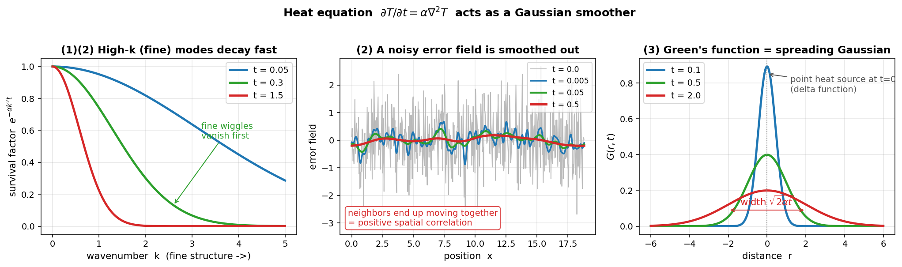
左：波数空間で見ると細かい成分（大きい$k$）ほど速く減衰 ／ 中央：ギザギザの誤差場が時間とともに滑らかになり、隣同士が連動（＝正の空間相関）／ 右：点熱源は幅 $\sqrt{2\alpha t}$ のガウス山に広がる（グリーン関数そのもの）
4.5 なぜ熱解析ならOIでいけるのか ②Bの「形」と「スケール」を物理から決められる
初期値や境界条件の誤差も同じ熱伝導方程式に従って拡散する。 前ページの図のとおり、誤差場は必ず滑らかにされ、近くの点同士の誤差は自然に連動する（＝正の相関を持つ）。
- 形：誤差相関は距離とともに単調減衰 → ガウス型 $\exp(-r^2/2L^2)$ が良い近似になる（グリーン関数と同形）
- スケール：相関長 $L$ は熱拡散長 $\sqrt{\alpha t}$（非定常）や熱源から境界までの代表長さ（定常）から物理的に見積もれる
結果① OI（最適内挿法）× ランダムセンサ
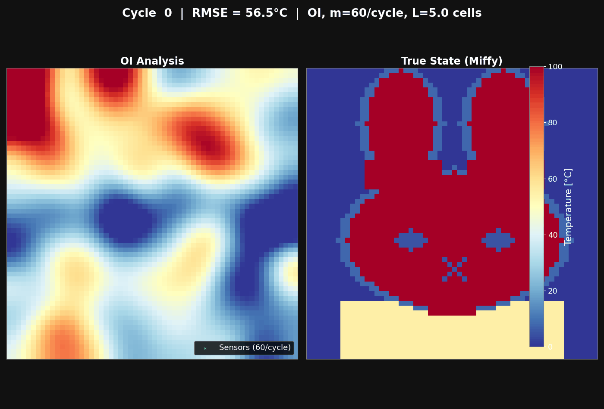
毎サイクル60点のセンサをランダムに置き直しながら、OI更新を50回繰り返す
設定（§4.3の流儀①）
$\mathbf{B}$ ＝ガウス相関（相関長 $L$=8セル）を決め打ち。40×60格子、ランダムノイズの初期場から開始。
結果：○ 安定に収束
ミッフィーちゃんが滑らかに浮かび上がる。アンサンブル不要で高速・教育的。 ただし $\mathbf{B}$ が固定なので場の構造を学習できず、精度の天井は EnKF より低い。
結果② KF（線形カルマンフィルタ）× ランダムセンサ
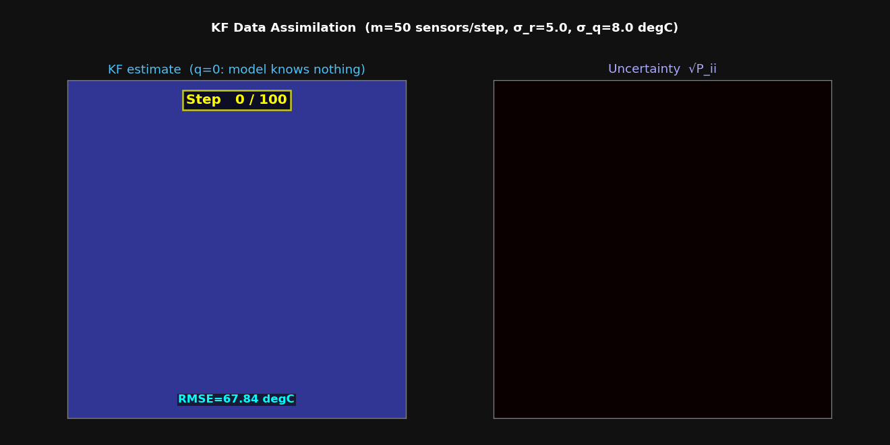
熱伝導ダイナミクスを予測ステップに組み込んだ線形KF（100ステップ）
設定（§4.3の流儀②）
予測ステップで熱伝導方程式により状態を伝播し、$\mathbf{P}$ も $\mathbf{P}^f = \mathbf{M}\mathbf{P}^a\mathbf{M}^\top + \mathbf{Q}$ で厳密に時間発展（900セル）。
結果：○ 線形厳密で安定
物理則で誤差共分散を運ぶ「教科書どおりの最適推定」。 ただし $\mathbf{P}$ は $n \times n$ 行列 → 実機FEモデル（35万要素）では格納すら不可能。 先行研究（Lang et al.）がモード縮約で解決したのはまさにこの問題。
結果③ EnKF（アンサンブルKF）× ランダムセンサ
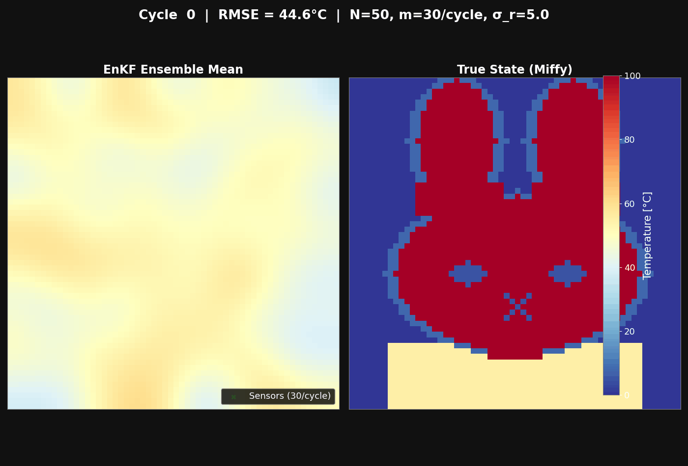
N=50メンバーの確率的EnKF（毎サイクル30点をランダム再配置、50サイクル）
設定（§4.3の流儀③）
$\mathbf{B}$ を50本のアンサンブルから標本推定（60×60格子）。 局所化（R_loc=8セル）で遠距離の偽相関を除去。
結果：○ OIより高精度
$\mathbf{B}$ がデータドリブンに更新されるため、後半サイクルの精度がOIを上回る。 大規模でも $N \times n$ で済み、非線形モデルにも拡張できる。
結果④ EnKF × 固定センサ + インフレーション ― 発散（失敗）
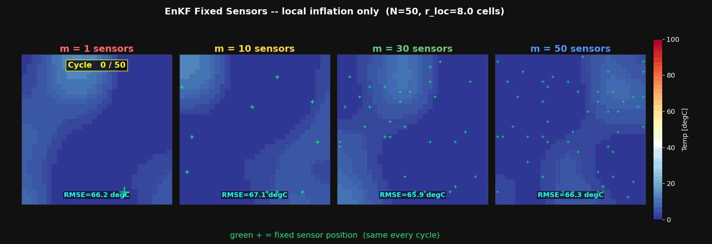
センサ固定のEnKF＋乗法インフレーション：サイクル後半で場が崩壊していく
何が起きたか
センサ位置を固定し、乗法インフレーション（1.10倍/サイクル）を適用したところ、 サイクル40以降にすべてのセンサ数設定で発散（RMSE: 63°C → 137°C）。
原因
センサ周辺の共分散が 1.21 倍/サイクル で増幅され続け、 50サイクルで理論上 1.2150 ≈ 12,100倍 に。 カルマンゲインが暴走し、観測ノイズのランダムウォークが蓄積した。
教訓
固定センサ × 乗法インフレーション × 多サイクルは危険な組み合わせ。 実機のセンサは動かせないため、この失敗パターンを避ける手法選定が重要。
結果⑤ ESMDA とは何か ―「一気に補正せず、薄めて何回も」
ESMDA = Ensemble Smoother with Multiple Data Assimilation（Emerick & Reynolds 2013。石油貯留層の履歴マッチング分野で生まれた手法）
EnKF（1回で強く補正）
観測誤差 $\mathbf{R}$ をそのまま使って一気に更新：
$$\mathbf{K} = \mathbf{P}H^\top(H\mathbf{P}H^\top + \mathbf{R})^{-1}$$
1回の更新量が大きい → アンサンブルの広がりが急収縮し「過信」状態に。固定センサだと同じ場所ばかり強く引っ張られ、暴走の温床になる。
ESMDA（薄めて N 回に分けて補正）
観測誤差を $\alpha_k$ 倍に膨らませ（例：$\alpha_k = N_{\rm iter}$）、同じ観測を $N_{\rm iter}$ 回同化：
$$\mathbf{K}_k = \mathbf{P}H^\top(H\mathbf{P}H^\top + \alpha_k\mathbf{R})^{-1}, \quad \sum_k \frac{1}{\alpha_k} = 1$$
1回あたりの更新量が小さい → 安定。しかも線形ガウスなら「薄めて N 回」=「原液で 1 回」と同じ答えになることが理論的に保証される。
結果⑤ ESMDA × 固定センサ ― 安定・高精度（◎）

なぜ安定するか
標準EnKFは観測誤差 $R$ を毎サイクルそのまま使うため更新が積み重なって発散しやすい。 ESMDAは $R_{\rm eff} = N_{\rm iter}\times R$ に膨らませて $N_{\rm iter}$ 回に分けて更新するため、 1回あたりの更新量が小さく、累積しても発散しない（Emerick & Reynolds 2013）。
グリッド30×30=900セル、初期分布は一様20°C＋空間相関ノイズ、 センサは真値を見ない空間充填配置で固定（実機のセンサ設置と同じ制約条件）。
| センサ数 m | 30 | 100 | 200 | 300 |
|---|---|---|---|---|
| 最終 RMSE [°C] | 40.50 | 26.30 | 22.87 | 19.82 |
センサを増やすほど単調に改善。300点以降は改善が頭打ち（400点でも19.78°Cとほぼ変わらず）。
補足：「OI × 固定センサ」でもいけるのでは？ → いける
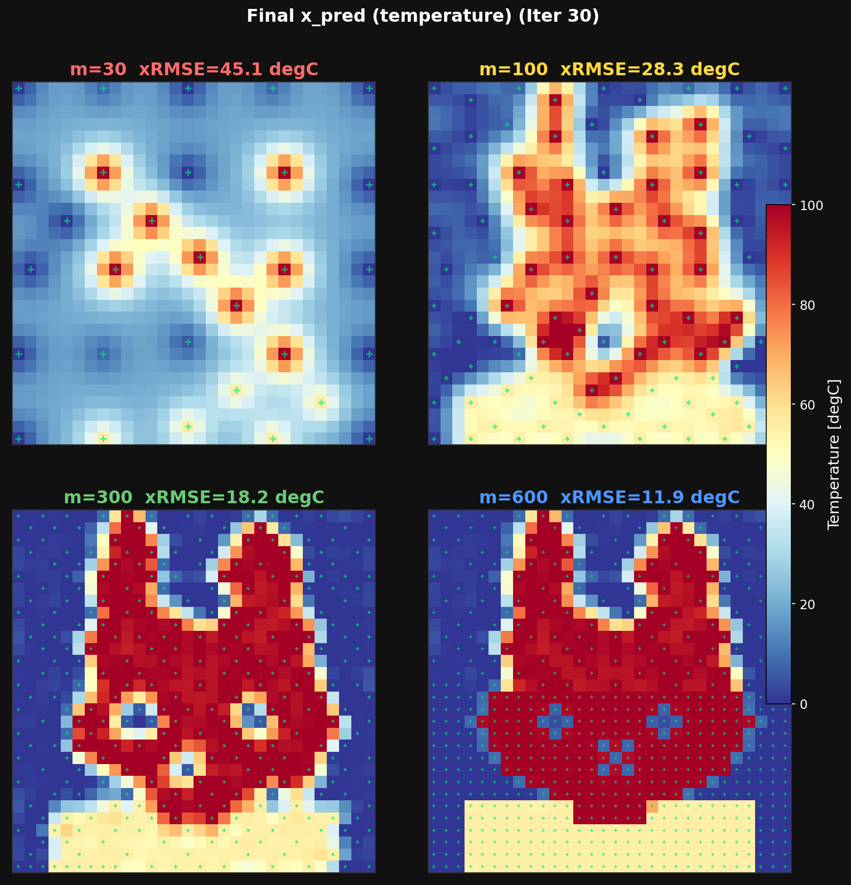
決定論的OI（Matérn-3/2共分散を決め打ち）× 固定センサの最終温度場
| センサ数 m | 30 | 100 | 300 | 600 |
|---|---|---|---|---|
| 最終 RMSE [°C] | 45.1 | 28.3 | 18.2 | 11.9 |
なぜOIは固定センサで発散しないのか
結果④の発散は「データから推定した共分散がセンサ周辺で増幅され続ける」正のフィードバックが原因。 OIの $\mathbf{B}$ は固定（決め打ち）なのでこのループ自体が存在せず、決定論的更新ならノイズも入らない → 原理的に発散しようがない。
m=300 で 18.2°C と、確率的ESMDA（19.8°C）よりわずかに良い。線形ガウス問題ではサンプリング誤差ゼロの決定論的OIが有利 ― §4.4「熱的な場は滑らか → B を物理から決め打ちできる」の理論どおりの結果。
ではアンサンブルは何のため？ → ①Bをデータドリブンに学習できる、②非線形の順問題（次の熱源推定）にそのまま拡張できる、③不確かさ（分散）も同時に得られる。
実装：A02_miffy_deterministic_esmda_oi_SCfixTimefix_Q/python/enkf_heatid.py（Matérn-3/2共分散・尤度テンパリングによる決定論的OI/GP回帰）
発展：温度ではなく「熱源」を当てる（逆問題）
結果⑤と同じケース・同じ固定センサ・同じESMDAアルゴリズムの続き。変えたのは「何を状態変数（推定対象）にするか」だけ。
ここまで（結果⑤）
推定対象 = 温度場そのもの。
センサの温度から、センサの無い場所の温度を埋める「補間」に近い問題。
ここから（発展）
推定対象 = 熱源の分布 q（どこで・どれだけ発熱しているか）。
温度は測れるが、熱源は直接測れない。結果（温度）から原因（熱源）を遡る逆問題。
$\mathbf{x}=\mathbf{L}^{-1}(-\mathbf{q}/\alpha)$
発展の結果：熱源はどこまで当たったか

- 推定熱源から計算した温度場は m=300 で RMSE 20.06°C（温度場を直接推定した場合と同等）→ 観測を説明する能力は落ちていない
- 熱源のセル単位の鋭いエッジは、点の温度観測からは原理的に復元不可（q RMSE は 38.8 で飽和、真値 std=40.0）。熱伝導が細かい凹凸を消してしまうため、観測に痕跡が残らない
- ただし少し平滑化したスケール（σ=1）なら相関0.76で復元でき、輪郭・目・鼻が視認できる
局所化半径は温度場版の5では過渡的に発散するため10に拡大が必要だった。熱源→温度の関係が「非局所」（遠くの熱源も温度に効く）であることが原因（開発中に踏んだ罠）。
Round 2 の結果：おっさん（60×60）
ミッフィーちゃん（30×30=900セル）で確立した完全逆問題ESMDAを、コードほぼそのまま（変更は格子サイズ・真値・局所化半径のみ）で60×60=3600セルへ展開。
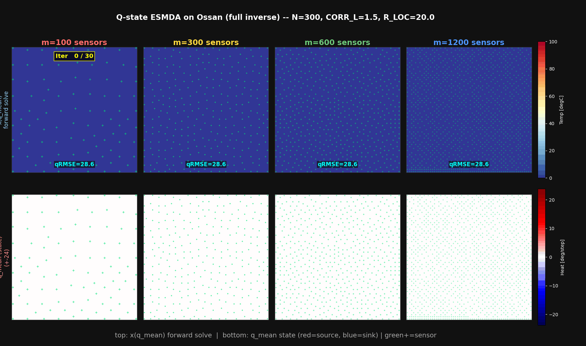
上段：推定熱源から順解析した温度場 ／ 下段：推定熱源場。反復とともにおっさんが浮かび上がる
| センサ数 m | 100 | 300 | 600 | 1200 |
|---|---|---|---|---|
| 温度 RMSE | 30.8°C | 27.5°C | 20.8°C | 17.1°C |
| 熱源相関 | 0.18 | 0.29 | 0.55 | 0.72 |
センサ密度で比較するとミッフィーの結果（相関0.76）とほぼ対応。手法自体はそのままスケールアップできた。
うまくいっていない点（正直な限界）
- m=100〜300では顔がほぼ判別できない（熱源相関 0.18〜0.29）。未知数4倍に対しセンサ密度が足りない
- m=1200 まで増やしても温度RMSEは 17.1°C 残る。メガネ・目などの細部は平滑化スケールでもぼやける
- 局所化半径をミッフィーの10のまま流用すると過渡的に発散。ドメインに合わせ20へ再調整が必要だった（自動では決まらない）
わかったこと・教訓
危険な組み合わせ
固定センサ × 乗法インフレーション（>1.0）× 多サイクル
→ 共分散が指数的に増幅 → カルマンゲイン暴走
初期アンサンブルが白色ノイズ
→ 偽の長距離相関 → 局所化しても大きな誤更新
安全な組み合わせ
固定センサ × ESMDA（$R_{\rm eff}=N_{\rm iter}\times R$）
→ 更新量を制限して安定
初期アンサンブルはガウス相関ノイズを使う（白色ノイズを避ける）
今後の展開 ― 工作機械の熱変位予測へ
温度分布と変位を同時推定
- 非定常化：時系列観測での熱源・温度分布の追跡（加工中の熱変化を追う）
- 実CAEケースへの展開：OpenFOAM / FrontISTR（
sample/002-1系）へQ-state同化を適用し、実際の熱伝導・熱応力解析にデータ同化を組み込む - 縮約モデルとの組み合わせ：先行研究（Lang et al.）のようにモード縮約＋KFで実規模FEモデルへ
- エッジを表現できる事前分布：全変動正則化・非ガウス事前分布で、平滑化スケールを超えた復元に挑戦
まとめ
モチベーション
工作機械の加工精度は熱変位に強く依存するが、実測できる温度・角度は一部のみ。 温度分布の傾向が合っていても熱変位の傾向は異なりうるため、データ同化で全体の場を精度よく推定したい。 先行研究（Lang et al. 2024）は13センサ＋KFで35万要素の熱状態と熱変位（誤差−52.7%）の推定を実証済み。
やったこと
ミッフィーちゃんの2Dドット絵を真の温度場に見立て、OI・KF・EnKF・ESMDAを比較。 全手法が線形ガウス更新を共有し、違いは誤差共分散Bの入手法（事前定義／物理伝播／アンサンブル）にあることを整理。 固定センサではESMDAが安定・高精度であることを確認した。
わかったこと
熱伝導が支配する問題ではBの構造（ガウス相関・相関長√αt）を物理から見積もれるため、OIでも実用になる。 固定センサ問題ではESMDAが実用的。熱源のセルスケールのエッジ復元には原理的限界があるが、 平滑化スケールでは十分な情報が復元できる。
次の一歩
- 温度分布 → 熱変位の推定へ拡張
- 温度＋角度の同時推定
- 実CAEケース（OpenFOAM/FrontISTR）への展開
詳細: study/practice/README.md ／ 各ケースdocs ／ 参考: Lang et al., Manufacturing Letters 41 (2024) 208–218 ／ 解説記事: https://takun-physics.net/19375/